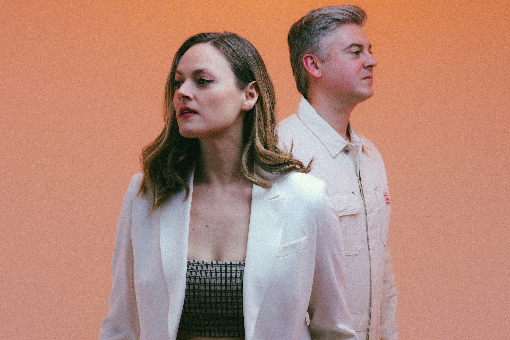

Paperwhite’s 'Reach' Is a Dream Pulled Into Focus

After years of quiet and a world reshaped by distance, Paperwhite returns with Reach, a five-song collection that feels like it kept evolving even when we could not hear it. The sibling duo, Katie and Ben Marshall, have always worked in a space where feeling matters as much as sound. This time, though, their music lands with a different kind of presence. Not louder or heavier, just clearer. More grounded. Like they have carried the weight of time and turned it into melody.
At the center of Reach is Looking Back, a track that holds its breath in the best way. It started early in the pandemic but only found its final shape with the help of composer Philip Sheppard. His string arrangements stretch through the track with quiet purpose. They do not overpower the synths. They move through them like something remembered rather than added. The result is a sound that feels both fragile and full, something built from memory rather than design.
That is the strength of the entire EP. Reach sounds like it was made by people who lived inside their ideas for a while before speaking them out loud. It holds moments gently. Nothing feels rushed. Katie’s vocals move with soft confidence, floating over Ben’s production in a way that gives space for emotion without losing structure. These are not songs meant to escape into. They are songs meant to sit with, especially in the in-between hours when silence feels too loud.
Ten years have passed since Paperwhite introduced themselves with Escape. Back then, their sound fit neatly into a wave of glossy synth-pop made for headphone daydreams. You can still hear traces of that in the shimmer of this new EP. But there is more here. Organic layers. Soft acoustic touches. Lyrical choices that sound less like poetry and more like truth spoken plainly. It is pop music, but not in a way that pushes for attention. It is music that lets the listener come forward on their own terms.
There is a kind of patience in these songs that feels rare. Nothing here grabs at you. Instead, Reach draws you in slowly, offering detail after detail the more you listen. It rewards stillness. These tracks are meant for early mornings or late nights, for quiet drives or open windows. They settle in without asking for anything, then stay with you in a way that feels earned.
Paperwhite still sound like themselves, which is saying something in a genre that often moves too fast to remember what came before. Listeners who love CHVRCHES or Japanese House will feel at home here, but Reach does not borrow. It remembers. It reflects. It builds something personal out of familiar textures, using light and shadow with equal care.
The EP never rushes to its point. It trusts that you will get there. In a culture built on short attention spans, this feels quietly bold. Every song has room to breathe. Every lyric lands softly but carries weight. With each listen, what first felt dreamy becomes more detailed. What seemed simple reveals something deeper.
This is not a loud return. It is not a comeback with fireworks or declarations. It is something more honest. A steady hand reaching back out after time apart. A project that carries both softness and strength. A sound that knows where it came from and does not pretend to be anything else.
With Reach, Paperwhite proves that you do not have to chase the moment to create something lasting. You just have to mean it. These songs do. And they stay with you long after the final note fades.
This dispatch was last updated on August 2, 2025